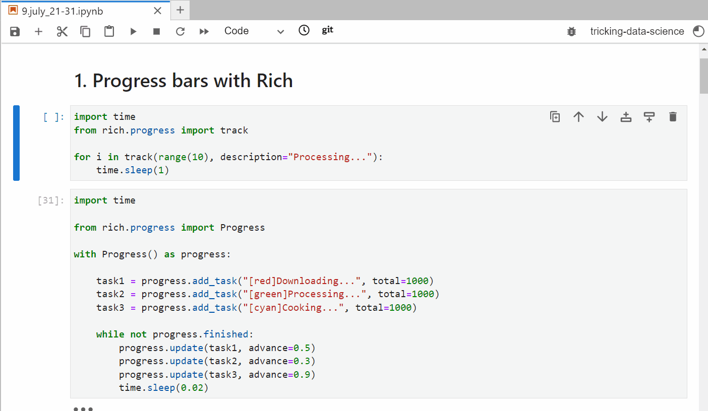

JupyterLab
Contents
6.1. JupyterLab#
6.1.1. Add a conda environment to Jupyter#
Here is how to a conda environment to Jupyter lab in a jiffy:
6.1.2. Best Jupyter Lab magic commands#
Jupyter Lab has a lot of tricks up its sleeve and only the people that used it for a long time know them.
Here are 5 of such tricks from its list of magic commands:
autoreload - if you use scipts in notebooks a lot, you know what a pain it is to restart the kernel every time you make a change to your script. Not anymore.
run - another command for scripts - execute and get the output of a script right inside a cell
who - a variable inspector. Best part is that you can filter variables based on class name.
pinfo - no need to check out the docs. This will do for any name in the notebook.
pycat - Linux’s cat command in the notebooks.
6.1.3. Mount Google Drive on Colab#
It is infuriating that once a session is ended, Google Colab discards uploaded files. So, instead of uploading your CSVs directly to Colab, you can store them in your Google Drive and access them from your notebooks. Here is how👇
6.1.4. Progress bars with Rich#
TQDM for progress bars in Jupyter is outdated. Instead, go with Rich!
Apart from being an excellent CLI tool, Rich works greatly with Jupyter Lab as well.
The display is fully customizable. You can tweak the text labels, the width and ordering of the bars and much more.
Check out the docs for more details in the first comment.

Rich progress bar display: https://bit.ly/3vdDw3U
6.1.5. Session expiry trick in Colab#
What kind of dirty tricks do you use in Colab?
For me, If I have to get away from my computer and am worried about losing the session, I just import the time module and set the cell to sleep for a few hours - 60 * 60 * 10.
That way, the session will never go idle even if the previous cells finish execution.